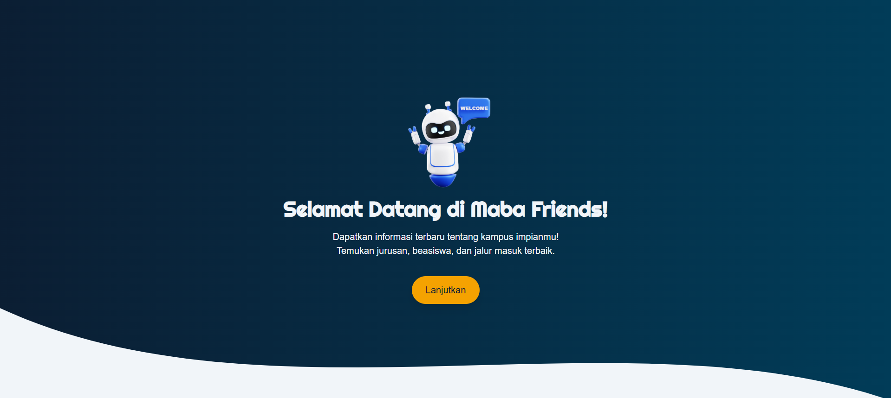

Maba Friends
Platform informasi untuk calon mahasiswa baru.
Tentang Proyek
Maba Friends adalah sebuah proyek yang saya kembangkan untuk membantu siswa SMA dan calon mahasiswa dalam mencari informasi terpusat mengenai perguruan tinggi. Tujuannya adalah untuk memudahkan pencarian jurusan, informasi beasiswa, dan jalur masuk yang seringkali tersebar di berbagai sumber.
Tantangan & Pembelajaran
Tantangan terbesar dalam proyek ini adalah mengumpulkan dan menstrukturkan data dari berbagai sumber agar mudah ditampilkan. Melalui proyek ini, saya belajar banyak tentang manajemen state pada React dan pentingnya desain antarmuka yang intuitif bagi pengguna.